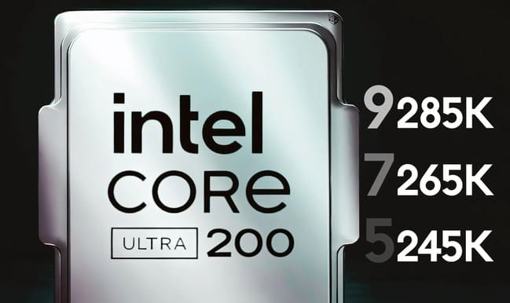

As the release date for Intel's next-generation Core Ultra 200 processors approaches, rumors surrounding these products are intensifying. According to the latest news, motherboards equipped with Intel's Z890 chipset and LGA1851 socket are expected to be unveiled on October 10.
As reported by Tom’s Hardware, the new Z890 motherboards and Arrow Lake desktop processors will soon be introduced. It is rumored that motherboard manufacturers will present their Z890 models on October 19, with reviews of the Arrow Lake processors scheduled for October 24.
These rumors align with previous reports regarding the introduction of Arrow Lake desktop processors and the new LGA1851 platform this month. This new platform aims to compete with AMD's Ryzen 9000 series processors and motherboards equipped with the X870E/X870 chipset.
According to these details, the Core Ultra 200 processors, codenamed Arrow Lake, are also set to be launched on the same date. They will be released under the new naming convention of Ultra 9, Ultra 7, and Ultra 5. The three K models of these processors—Core Ultra 9 285K, Core Ultra 7 265K, and Core Ultra 5 245K—will be the first next-generation Intel processors to hit the market, with non-K models expected to be introduced in early 2025.
Reports suggest that the frequency and power consumption of the Arrow Lake processors will be lower compared to the 13th and 14th generations. The maximum boost frequency for the flagship model, Core Ultra 9 285K, has been reported to be below 6 GHz, and the power consumption of these processors will also be less than that of the Raptor Lake models.
The LGA1851 socket, which replaces the LGA1700, has more pins and is larger in size. This new socket measures 45 by 37.55 millimeters and is designed to support Arrow Lake processors.
Similar to AMD's AM5 platform, the new platform will support only DDR5 memory. The Z890 motherboard will be introduced with features like Thunderbolt 4 ports and M.2 support with PCIe 5.0 for the primary slot and PCIe 4.0 for the secondary slot.